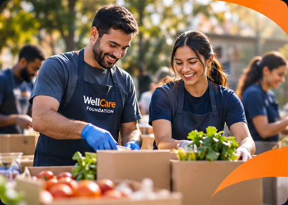

Our mission
To inspire Australians to give $1 a day and help sustain quality meals, emergency food relief and compassionate community initiatives for people facing hardship.
Wellcare Foundation invites Australians to give just $1 a day. Together, these small contributions can help sustain quality meals, emergency food relief and community initiatives for people experiencing hardship.

We believe everyone deserves dignity, connection and access to a quality meal when times are difficult.
Wellcare Foundation is focused on bringing Australians together around practical community support. Through the $1 Movement, we encourage people to contribute a small amount regularly to help build a more sustainable source of funding for meals, emergency food relief and local initiatives.
Our commitment extends to children, families, adults, older Australians, people with disability and anyone experiencing hardship. We aim to listen, work with local partners and support communities with compassion and respect.
The $1 Movement encourages regular giving to help support food relief and community wellbeing. Our goals describe what we aim to achieve, not verified outcomes.
To inspire Australians to give $1 a day and help sustain quality meals, emergency food relief and compassionate community initiatives for people facing hardship.
An Australia where people from every walk of life can access support, feel connected and face difficult times with dignity and hope.
To approach fundraising and community support with compassion, inclusion, accountability and meaningful local partnerships.
Every contribution represents trust. Our values guide how we seek to serve people and build community partnerships.
Meeting hardship with kindness, understanding and practical care.
Welcoming children, families, adults, seniors and people with disability.
Recognising every person as more than their circumstances.
Bringing neighbours, volunteers and local organisations together.
Using donations thoughtfully and communicating clearly about their impact.
Food insecurity and hardship can affect anyone. Our mission is broad and inclusive, while our immediate fundraising focus is quality meals and emergency food relief.
Helping build a community where young people experiencing hardship can feel supported.
Recognising the pressures on households and the importance of food security and connection.
Supporting dignity and access to practical community assistance during difficult times.
Promoting inclusion, accessibility and respect in community initiatives.
Recognising the importance of nutritious meals, belonging and social connection.
Welcoming people of all backgrounds who may benefit from food relief or community connection.

A small regular contribution can become meaningful collective support when a community participates.
The $1 Movement invites supporters to give $1 each day, or an equivalent regular amount. Contributions are intended to help build reliable funding for quality meals, emergency food relief and community initiatives in Australia. Program delivery and donation options should be confirmed before launch.
$1 A DAY • FOOD RELIEF • COMMUNITY MEALS • AUSTRALIA
Find out more about giving $1 a day and getting involved in the Foundation’s work.
Contact usIt is an invitation to donate just $1 a day, helping build sustainable support for quality meals, food relief and community initiatives in Australia.
The Foundation aims to support children, families, adults, seniors, people with disability and others facing hardship. Specific program availability should be confirmed directly.
Yes. You can ask about volunteering, fundraising, partnerships or sharing the $1 Movement with others.
Join the movement by giving $1 a day, volunteering, fundraising or partnering with us. Together, small actions can help support people facing hardship.